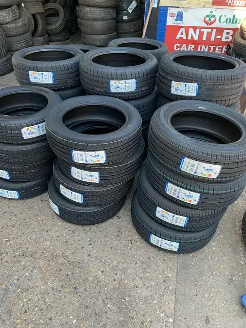
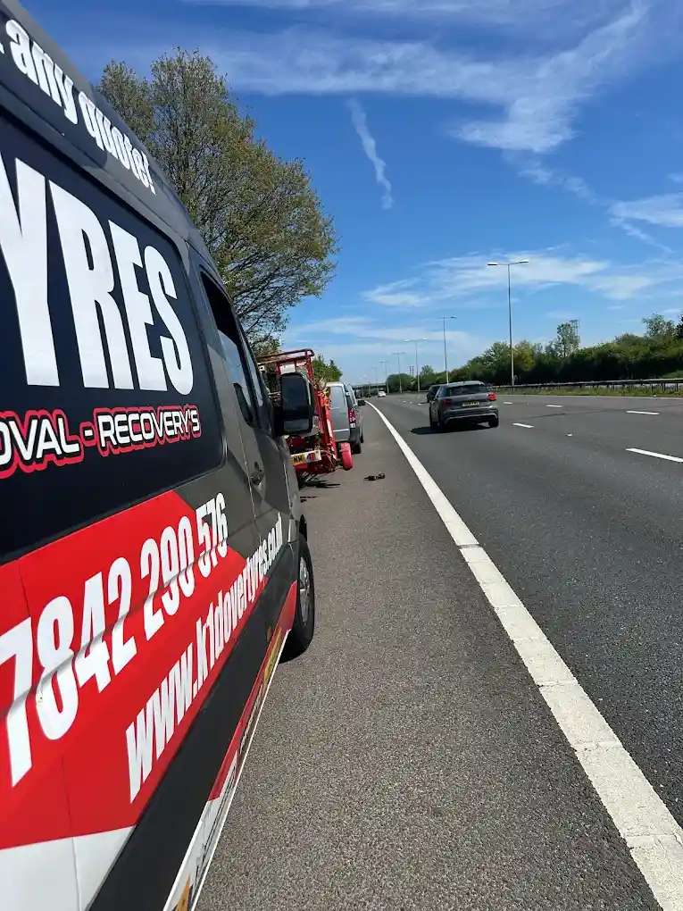
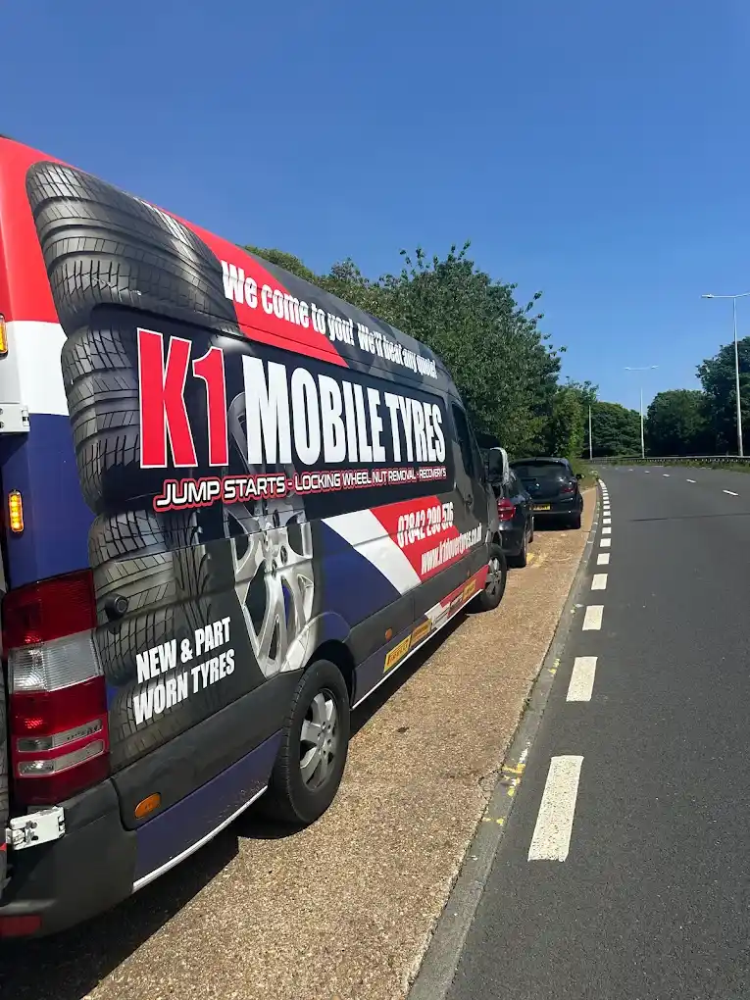

Mobile tyre fitting
Tyres supplied and fitted at home, work or the roadside. All brands from budget to premium, fixed price confirmed before dispatch. Your tyre size or reg is enough.
Get a quote →A fitter reaches your home, workplace or roadside spot in 30 minutes on average, 365 days a year, anywhere in Dover and across Kent. A real person answers. No call-out fee.
Call now — day or night01304 350200Type your postcode or town. Takes two seconds.
Every service comes to your location. Emergency and roadside call-outs are handled the same way as booked jobs: call, we locate you, we fix it on the spot.
Tyres supplied and fitted at home, work or the roadside. All brands from budget to premium, fixed price confirmed before dispatch. Your tyre size or reg is enough.
Get a quote →Nail in the tyre or a slow puncture? We assess and repair on the spot, no towing. If it can’t be repaired safely we replace it straight away.
Get a quote →Damaged, worn or blown tyre swapped on-site. Fitted with a new valve and balanced, old tyre taken away.
Get a quote →Flat battery? A technician arrives with a professional booster pack for petrol, diesel and start-stop vehicles, plus a basic battery health check.
Get help →Legal, inspected part-worn tyres for a failed MOT, a temporary fix or a sudden puncture. See the towns we serve below.
Part-worn details →Car won’t start? We test the battery on-site and fit the correct replacement for your car or van, usually within 20–30 minutes.
Get a quote →Flatbed and wheel-lift recovery, 24/7. We try a roadside fix first to save you a needless tow.
Get help →Lost the key, or the nut is rounded or broken? Controlled extraction that protects your wheel studs. Same-day, 7 days a week.
Get help →Ran dry or misfuelled? Emergency petrol or diesel brought to the roadside, home, work or car park. Price and ETA confirmed before dispatch.
Get help →
Every part-worn tyre we supply is inspected before it goes on your car.
Available in:
Average arrival is 30 minutes, often around 20. Outlying villages and rush hour can add time, and we give you an ETA on the call.
Ring 01304 350200 or message us on WhatsApp. A real person answers, with no automated menus. Tell us your tyre size or reg and what happened.
Share your postcode or live location. We confirm a fixed price and dispatch the nearest van.
The technician repairs or replaces the tyre where you are: home, work or the hard shoulder’s safe spot. You drive away.




K1 Dover Tyres was founded in 2010 by Mr Hossain Hamedi. Dover is a port town where drivers need help at 2am, and we built a service that doesn’t close at 5pm or charge excessive call-out fees.
We run a fleet of 10+ fully stocked vans and 10+ qualified technicians. Tyre pressures are set to manufacturer spec, wheels are torqued correctly and old tyres are disposed of responsibly. Same service at 3am as 3pm.

Based at Beaconsfield Rd, Buckland, Dover CT16 2LL. Use the checker above to see if your postcode or town lights up.
Roads we regularly attend: A2, A20, A256, A258, M2, M20.
“We had flat tyres on M20 the sort me out in 40 minutes I will recommend ever one thank you k1 tyres”
“Very impressed, blown tyre Sunday morning and was able to replace both fronts within half an hour. Highly recommend and a decent price also!”
“Called very late at night quick to respond and attend to car, Came earlier than initially said. Very polite man takes great pride in what he does. His van and all his tools were immaculate very clean. Problem fixed within minutes beyond happy and very grateful”
“Was stranded with a damaged tyre. K1 Dover tyres came out to the rescue within an hour. Karvan was quick and very efficient. Very friendly, service with a smile.”
“Drove over a bolt in Amiens and contacted K1 Dover Tyres, who were very helpful… repaired the tyre very quickly for £15. Lovely people and very skilled at their jobs and very reasonably priced.”
“KARWAN was exceptional, speedy, polite and efficient. Definitely recommend”
Reviews quoted from K1 Dover Tyres’ Google reviews. Also rated 4.9 on Trustpilot.
Book by phone or WhatsApp and a fitter comes to wherever you are.
Most call-outs are reached within 30 minutes. Outlying villages and rush hour can add time, and we give you an ETA on the call.
Yes. It runs through the night, and an early-morning flat or midnight puncture is handled like a daytime call.
Look on the tyre sidewall, e.g. 205/55 R16 91V (width, profile, rim, load index, speed rating). Or just send us your registration.
Yes. We do puncture and leak repair on-site if the tyre is repairable. If not, we replace it straight away, with a new or budget tyre.
We answer 24/7. For an emergency, don’t fill in a form — call.
01304 350200 WhatsApp 07842 290576